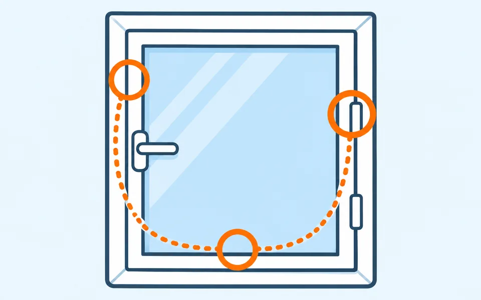

Окна
Окно продувает или створка не закрывается
Проверить. Открывание и закрывание створки, работу ручки, плотность прилегания и состояние доступных уплотнений.
Зафиксировать. Общий вид окна и крупный план места, где видны зазор или повреждение.